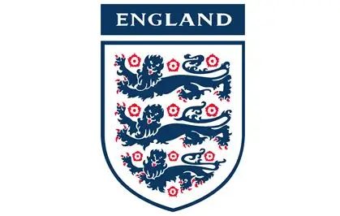
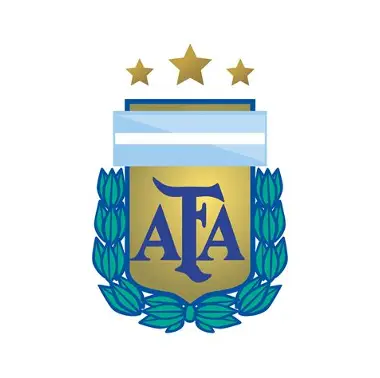

Image
Ryan Ager wins his fourth title after beating Greece 2-0 in normal time!
An early goal, and a late goal.
England Goalscorers: Kane 12', Kane 65'

After 4 years of waiting, Jake Prickett finally wins his first Supercup in an
all-time classic, a game of goals and events.
ARGENTINA: Lionel Messi 12', 90+3' Di Maria 57', Mac Allister 60', 63',
ENGLAND:Harry Kane 23', 27', 32', John Stones 82'

Ryan Ager makes it three in a row! Beating Germany, Spain, and now France
in the 2024 final! It's Marcus Rashford who wins it again!
FRANCE:Mbappe 65'
EnglandKane 43', Rashford 75'
Ryan Ager wins his second trophy in a row since the beginning of the Supercup,
and dominates a game against Spain, who were the original favorites!
ENGLAND:Walker 54', Foden 68', Bellingham 74'
SPAIN:Torres 23'
The innagural Supercup is won by Ryan Ager, who is 1-0 down to Germany for most of the game,
but then the substitute Marcus Rashford comes on and scores in stoppage time and
wins on penalties!
ENGLAND:Rashford 90+4'
GERMANY:Gundogan 23'
ENGLAND: Kane (S)
, Maguire (S), Foden (S), Grealish(S), Rashford(S)GERMANY:Gundogan(S), Kros (S), Muller(S), Benzema(S), Rudiger(M)